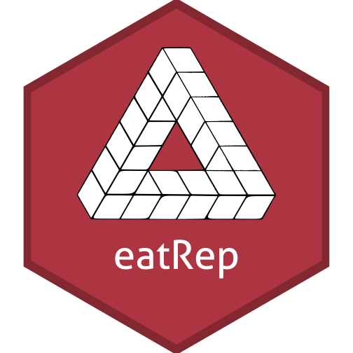

eatRep 
Overview
eatRep (Educational Assessment Tools for Replication Methods) provides functions to compute some basic statistic operations (means, standard deviations, frequency tables, percentiles and generalized linear models) in complex survey designs comprising multiple imputed variables and/or a clustered sampling structure which both deserve special procedures at least in estimating standard errors.
Exemplary analysis
The following example illustrates the computation of mean educational outcomes of three fictitious countries. Data stem from a large-scale assessment where reading competencies were assessed using dichotomous items (true/false). As the outcome is considered to be latent, plausible values were drawn for each examinee. Plausible values can be considered as multiple imputations of the inherently unobserved latent outcome. The within-person variance of plausible values is used to determine the measurement error. During sampling, classes were drawn instead of individuals. As the sample is clustered then, computation of sampling error involves replication methods.
library(eatRep)
### compute group means for multiple imputed data in a clustered structure
### from a large-scale assessment survey
data(lsa)
### Example 1: only means, SD and variances for each country
### We only consider domain 'reading'
rd <- lsa[which(lsa[,"domain"] == "reading"),]
### We only consider the first "nest".
rdN1 <- rd[which(rd[,"nest"] == 1),]
### First, we only consider year 2010
rdN1y10<- rdN1[which(rdN1[,"year"] == 2010),]
### mean estimation
means1 <- repMean(datL = rdN1y10, ID="idstud", wgt="wgt", type = "JK2", PSU = "jkzone",
repInd = "jkrep", imp="imp", groups = "country", dependent = "score",
na.rm=FALSE, doCheck=TRUE, engine = "BIFIEsurvey")
### reporting function: the function does not know which content domain is being considered,
### so the user may add new columns in the output using the 'add' argument
res1 <- report(means1, add = list(domain = "reading"))